The Creole Tomato Festival is an annual event produced by the French Market Corporation in New Orleans. Since the 1980s, it's been held every June in the French Quarter and celebrates the history of Creole tomatoes - tomatoes grown in Louisiana along the Mississippi River. The festival includes live music acts, food vendors offering tomato-inspired dishes, and local farmers selling boxes of fresh tomatoes.
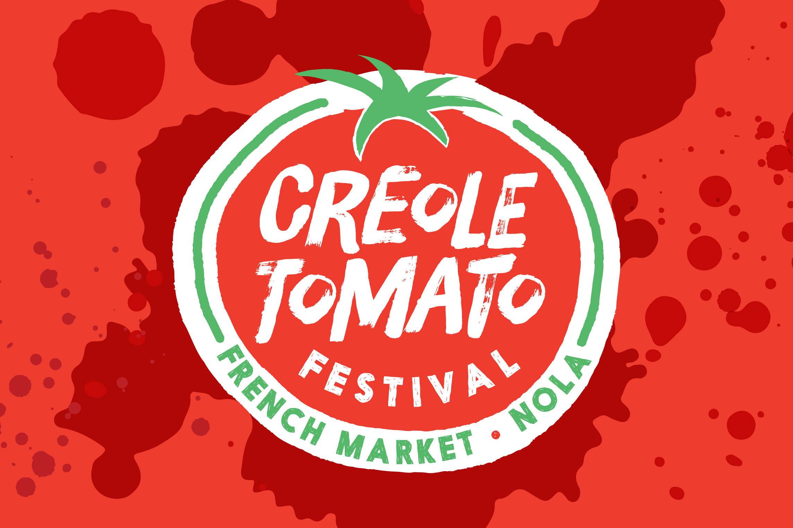
- Client
- French Market Corporation
- Agency
- Deep Fried Advertising
- Years Active
- 2014-2020
- Role
- Lead Design
- Work
- Logo, Print/Digital Advertising, Promo Items, Banners and Environmental Signage
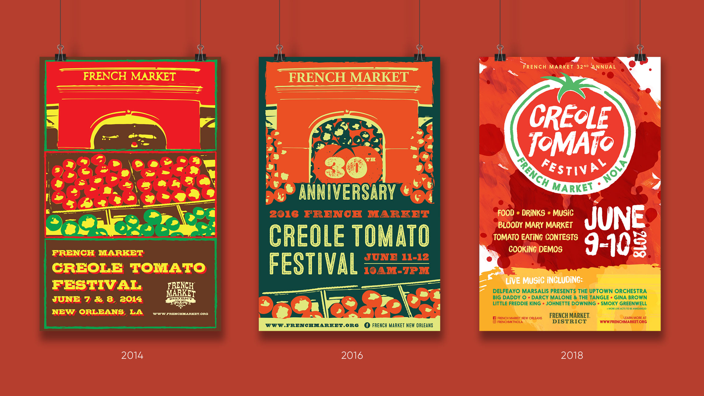
Since 2014, I've created materials for the festival as part of my extensive work with The French Market. The branding for the fest evolved over the years, starting with a pop-art style from 2014-2017 with minor color changes. Then in 2018, I revamped the brand completely into a bright, red, and juicy look complete with its own new logo.
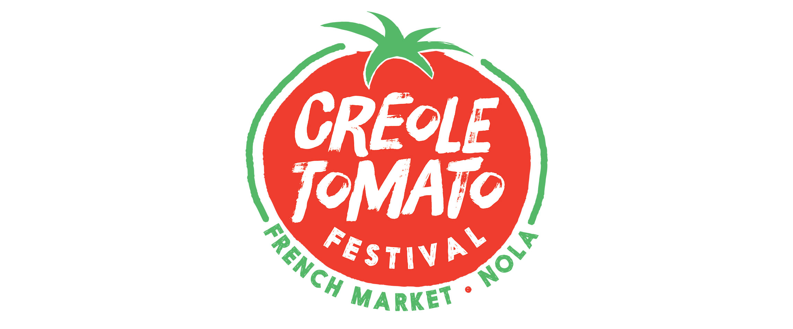
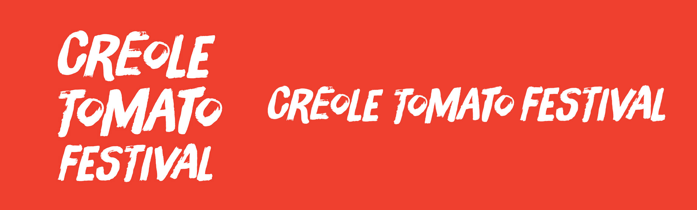
Materials designed for the festival include print advertisments, billboards, banners and stage scrims, along with promotional items like cups, sunglasses and t-shirts.
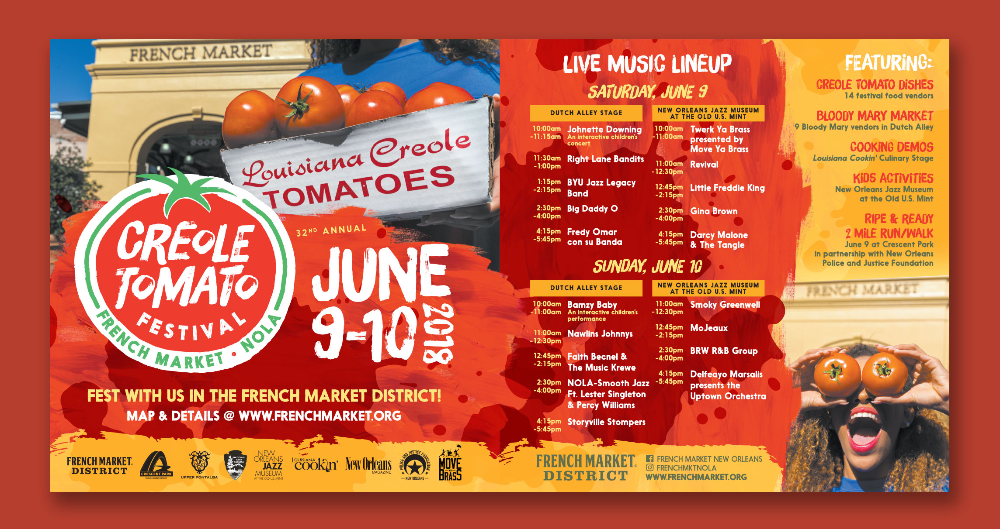
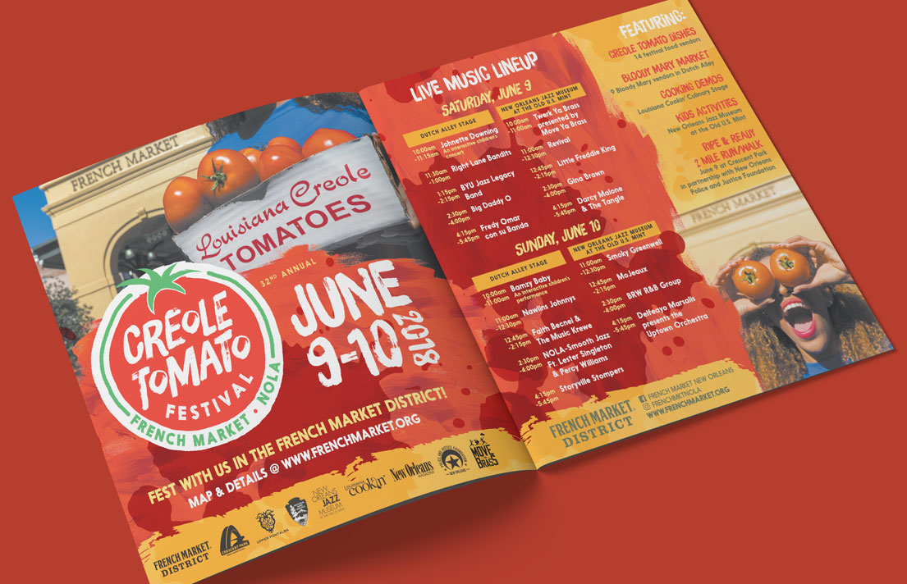
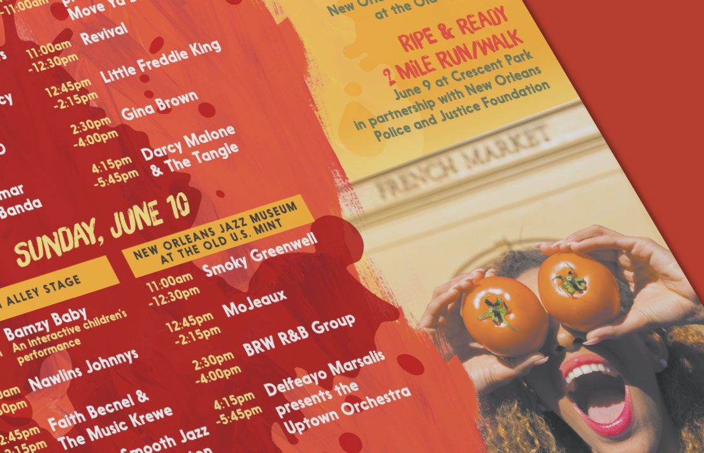
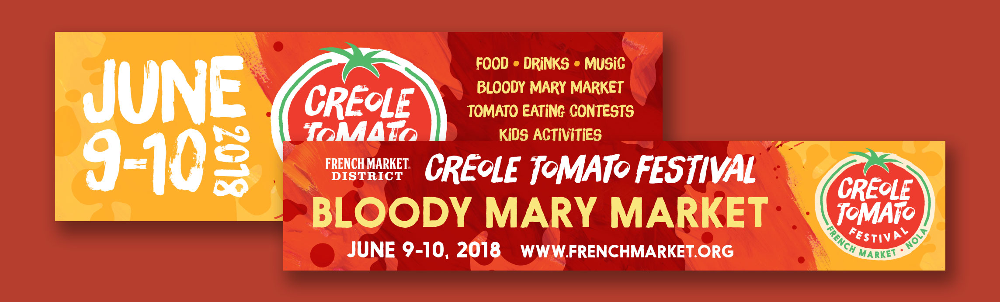
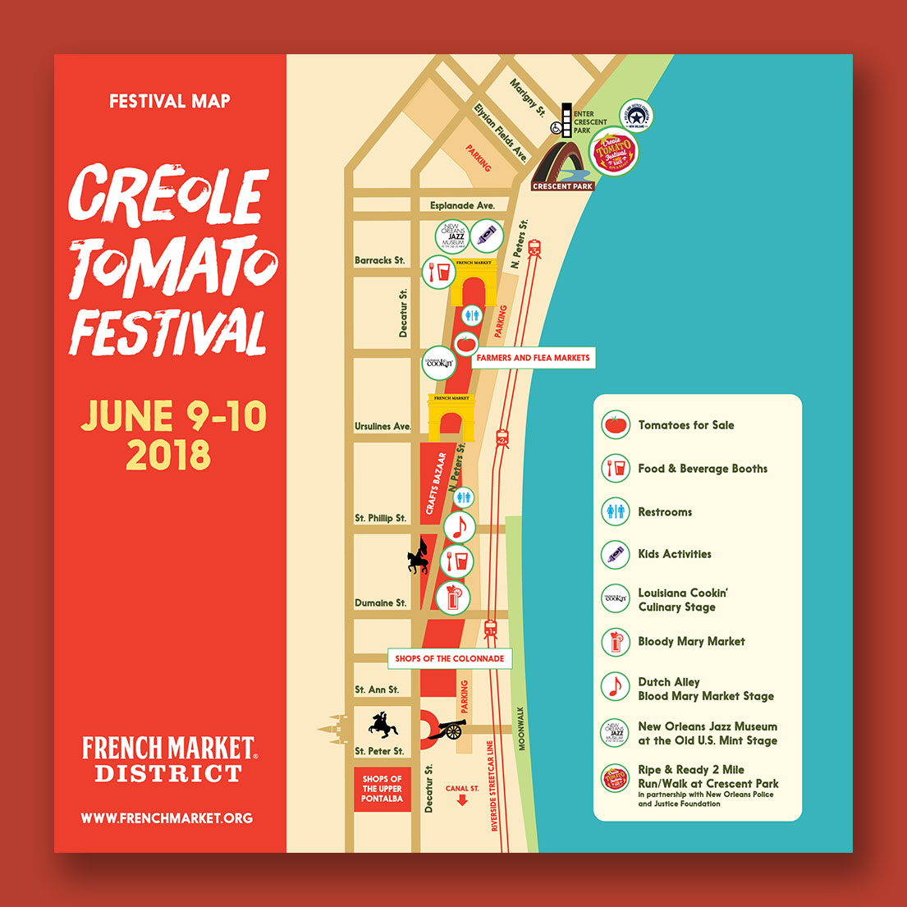
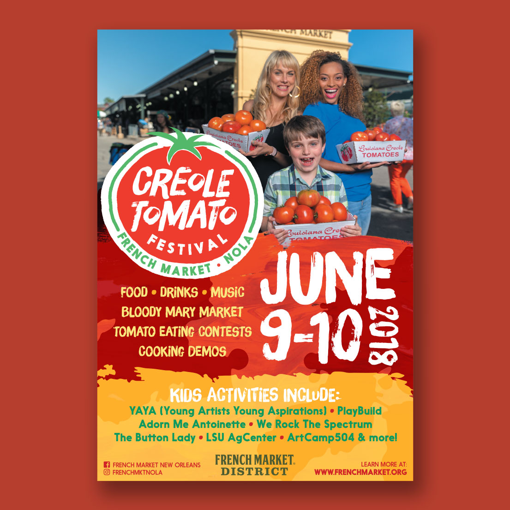
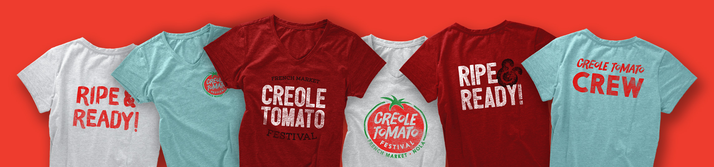
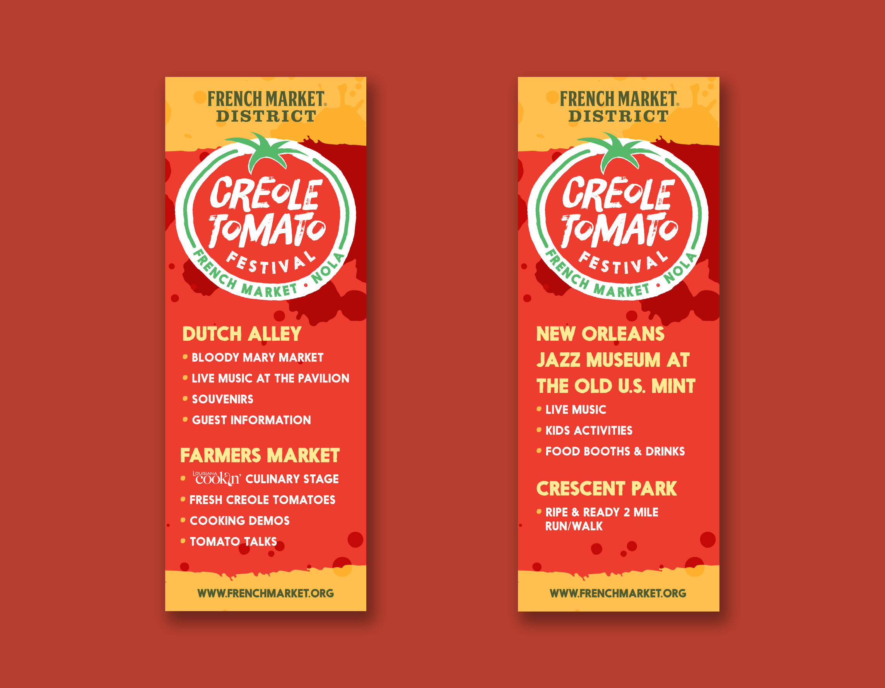
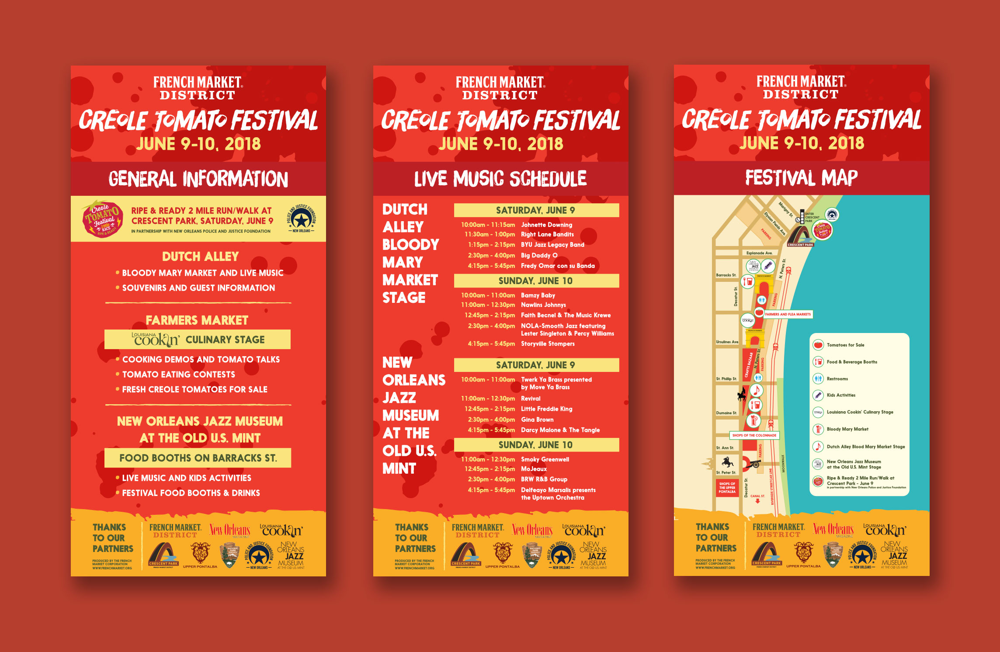